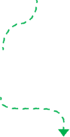
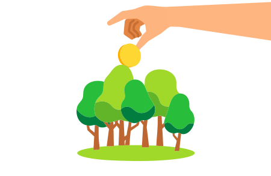
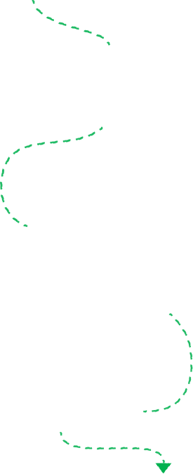
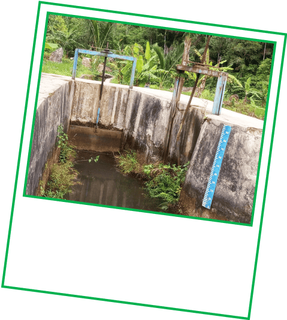
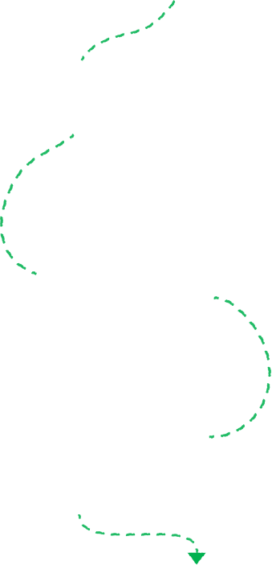
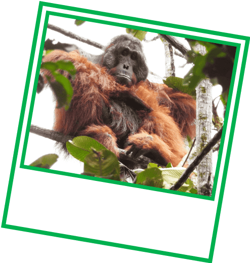
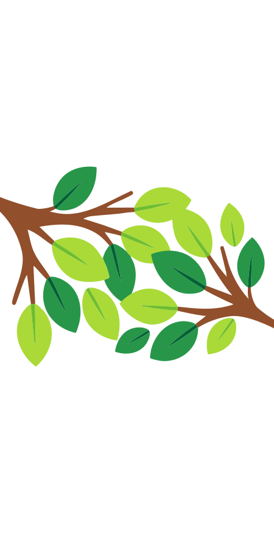
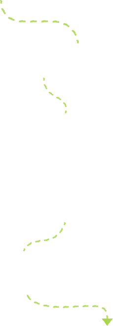
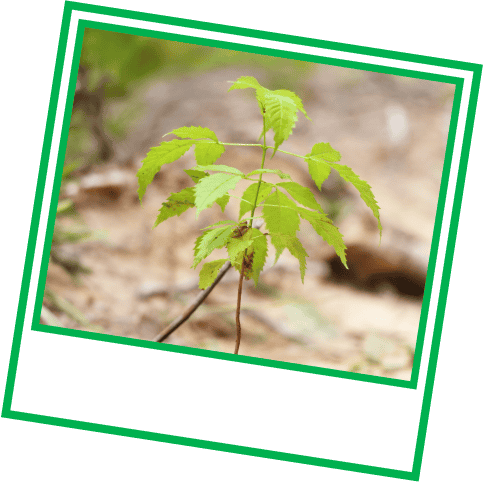

Setiap Rp200–Rp500 dari perjalanan atau pesanan Grab-mu akan
disalurkan untuk proyek pelestarian alam.
Inilah hasil nyata saat kamu ikut dalam Kontribusi Langkah Hijau
Karena uang kecilmu bisa berdampak besar buat bumi


Dengan dukunganmu,
Pembangkit Listrik Mikrohidro Ciganas I
dapat dipulihkan untuk menyediakan listrik yang stabil bagi
komunitas adat di Taman Nasional Gunung Halimun Salak.
Melalui inisiatif ini,
energi bersih dapat mencapai desa-desa terpencil di Indonesia
dan mengurangi ketergantungan pada bahan bakar fosil.
Fun Fact:
Di sejumlah daerah di Indonesia, sekolah-sekolah menggunakan sungai sebagai sumber listrik

Sekarang, pembangkit yang telah diperbaharui ini dapat
mengalirkan listrik untuk tempat tinggal, sekolah, klinik, dan
fasilitas kerja.

Karena itu, kami mendukung
Proyek Katingan Mentaya
yang bertujuan melindungi dan memulihkan hutan rawa gambut tropis di
Kalimantan Tengah.
Melindungi hutan ini berarti kita mencegah hampir
7,5 juta ton gas rumah kaca setiap tahunnya.
Ini adalah kemenangan besar untuk semua orang, baik yang tinggal di
hutan maupun tidak.
Percaya nggak?
Setiap menit, kita kehilangan hutan seluas 10 ukuran lapangan sepak bola

Hutan ini adalah rumah bagi lebih dari
5% orangutan Borneo
yang masih tersisa di dunia

Itu belum semuanya,
Kontribusi Langkah Hijau juga turut mendukung
Proyek Biochar Life Indonesia,
yang menggunakan biochar untuk mengubah polusi menjadi solusi
iklim dengan menyerap karbon, membantu ekonomi lokal, dan membuat
udara lebih bersih untuk kita semua.

Bisa tebak nggak, hingga hari ini ada berapa banyak pohon yang kita
semua tanam?
Fun Fact:
Sejak 2021, pengguna Grab seperti kamu sudah menjadi pahlawan dalam
konservasi hutan di Asia Tenggara.

1,2 juta pohon!

Sumber:
World Resources Institute
Cukup 2 menit?
Geser dan temukan fakta menarik - plus cara untukmu bisa berperan.